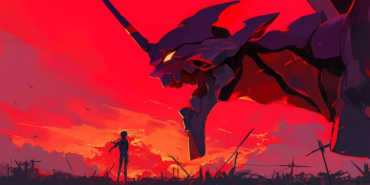
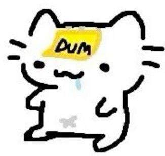

Conocimientos técnicos
- Python
- HTML y CSS
- JavaScript
- Git y GitHub
- Linux (Kali)
- C+, C++ y C#

Estudiante de Ingeniería en Software en la UAQ. Me gusta aprender, ordenar ideas, hacer que el software funcione y hacer a la gente reír.
Ver mis proyectosMe llamo Omar Shadday Hernandez Altamira y estudio Ingeniería en Software en la Universidad Autónoma de Querétaro. Me interesan los sistemas operativos y el desarrollo web.
Disfruto trabajar en equipo, documentar con claridad y convertir ideas complejas en proyectos que funcionan.
Me gustan los gatos, tengo 6, juego al básquetbol, soy bien malo, disfruto mucho jugar videojuegos y me encanta el mango, el chocolate blanco y la lasaña

Escucho, aporto y coordino para llegar juntos a la meta.
Aporto con mis ideas y propuestas.
Explico ideas técnicas de forma clara y ordenada.
Me adapto rápido y busco mejorar lo que hago.
Diseño en equipo de una red FTTH con tecnología GPON para Jalpan de Serra, Querétaro, con plano técnico, distancias y estructuras.
GPON · FTTH · Diseño de redes
Práctica de Sistemas Operativos sobre exclusión mutua entre procesos, documentada con evidencias en Kali Linux.
Sistemas operativos · Linux
Implementación de monitores para sincronizar hilos y evitar condiciones de carrera, con reporte técnico.
Python · Concurrencia
Página web que es una tienda, cuenta con bases de datos, página de administrador para el control de la página.
Enlace hacia la tiendaHTML y CSS
¿Tienes una idea o una oportunidad? Escríbeme.